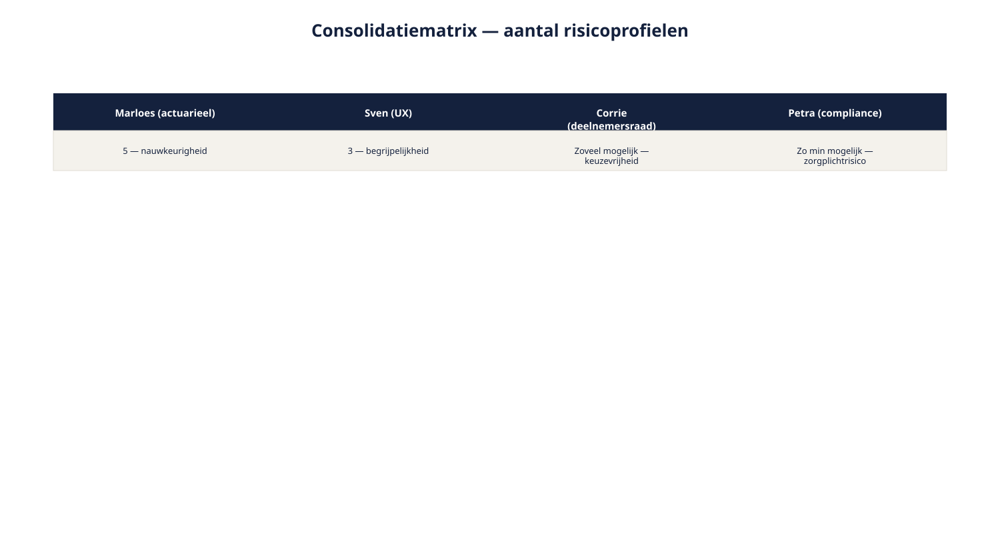

Cursus Requirements engineering · Niveau 2 (CPRE Advanced Level) · Deel 14 van 30
Elicitation: consolidatie en conflicthantering.
Deel 13 leverde Ruben Doornbos een flinke stapel input op over het risicoprofiel-onderdeel van Wegwijzer — en die stukken spreken elkaar op cruciale punten tegen. Dit deel geeft het gereedschap om die stapel te consolideren zonder verschillen te verdoezelen, drie soorten conflicten van elkaar te onderscheiden, per soort de juiste aanpak te kiezen, tijdig te escaleren, en het uiteindelijke besluit traceerbaar vast te leggen. Daarmee sluit dit deel spanningsveld 1 — veelstemmigheid — af.
9secties
±2uleestijd + werkboek
5controlevragen
3soorten conflicten
Positionering. Deze cursus is een voorbereiding op de CPRE Advanced Level-certificering van IREB en is uitdrukkelijk geen vervanging van het officiële syllabus- en examenmateriaal van IREB, te raadplegen via ireb.org.
In deel 13 koos Ruben, per fase van de elicitatiecyclus, de geschikte techniek op programmaniveau. Dat leverde voor het risicoprofiel-onderdeel van Wegwijzer een flinke stapel input op: een position paper van de sociale partners, een uitgewerkt interview met actuarieel adviseur Marloes Huisman, notulen van een gefaciliteerde sessie met deelnemersraad-voorzitter Corrie Willemsen, compliance officer Petra Dijkhuis en UX-specialist Sven Bakker, en de bevindingen uit een prototyping-sessie. Input ophalen is echter niet hetzelfde als er een bruikbaar requirement uit maken — vooral niet wanneer de bronnen elkaar op cruciale punten tegenspreken.
Dit deel behandelt hoe u die stapel consolideert zonder verschillen weg te poetsen, hoe u een conflict herkent en van het juiste soort aanpak voorziet, wanneer een conflict om escalatie vraagt, en hoe u het uiteindelijke besluit traceerbaar vastlegt. Daarmee rondt dit deel spanningsveld 1 — veelstemmigheid — af: eerst wist u, via gevorderde stakeholderanalyse (deel 12), wíe mocht meepraten en beslissen; vervolgens haalde u, via gevorderde techniekkeuze (deel 13), hun input op een passende manier op; dit deel brengt die input tot een houdbaar, traceerbaar besluit — zonder dat Ruben over sociale partners, deelnemersraad of fondsbestuur enig formeel gezag heeft.
Aan het eind van dit deel kunt u:
input uit verschillende bronnen en technieken consolideren zonder verschillen te verdoezelen;
drie soorten conflicten onderscheiden: schijnconflict, belangenconflict en mandaatconflict;
per soort conflict de juiste aanpak toepassen;
bepalen wanneer een conflict escalatie naar een hogere besluitvormer vereist;
een besluit zo vastleggen dat het conflict en de argumentatie traceerbaar blijven;
spanningsveld 1 (veelstemmigheid) van Wegwijzer afronden.
02
De casus: alle input binnen, geen duidelijkheid
⏱ 10 min
Ruben probeert de stapel input samen te voegen tot één requirementenset voor het risicoprofiel-onderdeel van Wegwijzer. Eén vraag springt er meteen uit: hoeveel risicoprofielen moet Wegwijzer aanbieden? Vier partijen, vier verschillende antwoorden, allemaal met een op zichzelf legitiem argument.
Marloes: "Voor voldoende rekenkundige nauwkeurigheid heb ik vijf risicoprofielen nodig — minder gaat ten koste van de scherpte van de berekening."
Sven: "Vijf is te veel. Boven de drie opties raken deelnemers eerder verward dan geholpen — meer keuzes helpen hier niemand."
Corrie: "Namens de deelnemersraad wil ik zoveel mogelijk keuzevrijheid — liever meer dan vijf dan minder."
Petra: "Elke extra keuze is een extra zorgplichtrisico. Ik pleit voor zo min mogelijk profielen."
Vier partijen, vier verschillende getallen, allemaal met een legitiem argument. Dit deel geeft het gereedschap om hier doorheen te komen — niet door zelf een compromis te verzinnen, maar door het verschil eerst correct te duiden, en het dan op de juiste plek te beleggen.
03
Consolideren zonder verdoezelen
⏱ 16 min
Consolideren is het samenbrengen van input uit verschillende bronnen tot een samenhangend geheel. Het risico bij consolideren is dat u, in de drang naar overzicht, verschillen wegpoetst — een gemiddelde neemt, of de sterkste stem laat winnen zonder de andere posities zichtbaar te houden. Dat levert schijnconsensus op: een document dat eruitziet alsof iedereen het eens is, terwijl dat niet zo is.
Vergelijk met niveau 1
Dit is dezelfde valkuil als een "grens open"-lijst die niet wordt bijgehouden (niveau 1, deel 2) — alleen dan op het niveau van meningen in plaats van scope. In beide gevallen verdwijnt informatie niet omdat zij onbelangrijk is, maar omdat niemand haar expliciet heeft vastgehouden.
Het instrument om dit te voorkomen is een consolidatiematrix: per onderwerp de positie van elke belanghebbende(groep) naast elkaar, met de onderliggende reden.
Onderwerp
Marloes (actuarieel)
Sven (UX)
Corrie (deelnemersraad)
Petra (compliance)
Aantal risicoprofielen
5 — nauwkeurigheid
3 — begrijpelijkheid
Zoveel mogelijk — keuzevrijheid
Zo min mogelijk — zorgplichtrisico

Figuur 14-1 — de consolidatiematrix voor het aantal risicoprofielen, met de vier posities zichtbaar naast elkaar
Deze matrix "lost" niets op. Dat is precies het punt: zij maakt het verschil zichtbaar en herleidbaar, zodat de volgende stap — vaststellen wat voor soort verschil dit is — met de juiste informatie gebeurt.
Controlevraag
Uit Werkboek deel 14, Opdracht 14.1 — De consolidatiematrix invullen
1Naast het aantal risicoprofielen speelt ook de vraag: "moet een deelnemer verplicht de vragenlijst over risicohouding invullen, of mag hij die overslaan en het standaardprofiel accepteren?" Vul een consolidatiematrix in voor dit onderwerp, met posities van Marloes, Sven, Corrie en Petra, gebaseerd op wat u over hun belangen weet.Toon antwoord
Voorbeeldmatrix: Marloes — liever verplicht; een correct risicoprofiel vereist accurate input, een overgeslagen vragenlijst ondermijnt de rekenkundige basis. Sven — liever optioneel, met een duidelijk standaardprofiel als vangnet; verplichting verhoogt de drempel en kan tot afhaken leiden. Corrie — optioneel, mits de deelnemer goed geïnformeerd is over de gevolgen van overslaan; keuzevrijheid, met een sterke nadruk op geïnformeerd zijn. Petra — verplicht, of anders met een expliciete, vastgelegde bevestiging van het overslaan; zorgplicht vereist een aantoonbaar bewuste keuze, ook bij het overslaan zelf. Bespreekpunt: Petra en Corrie hebben, ondanks een verschillend eerste standpunt (verplicht versus optioneel), mogelijk een gedeeld onderliggend belang — een geïnformeerde, bewuste keuze. Dat is een aanwijzing dat dit conflict bij nadere doorvraag deels een schijnconflict kan blijken.
04
Drie soorten conflicten
⏱ 16 min
Niet elk verschil in de consolidatiematrix is hetzelfde soort probleem. Het onderscheiden van drie soorten bepaalt welke aanpak werkt.
Schijnconflict. De partijen lijken het oneens, maar bij doorvragen (het ijsbergmodel, niveau 1 deel 4) blijkt het verschil te zitten in taal of perceptie, niet in het onderliggende belang. Bijvoorbeeld: twee belanghebbenden gebruiken "risicoprofiel" voor net iets andere dingen, en zodra dat helder is, blijkt hun wens grotendeels samen te vallen.
Belangenconflict. De partijen begrijpen elkaar goed, en zijn het toch fundamenteel oneens, omdat hun onderliggende belangen daadwerkelijk verschillen of elkaar uitsluiten. Het aantal risicoprofielen bij Wegwijzer is hier een schoolvoorbeeld van: Marloes en Petra hebben allebei goed geluisterd naar elkaars argumenten, en blijven het toch oneens, want nauwkeurigheid en zorgplicht-eenvoud trekken hier daadwerkelijk tegengesteld.
Mandaatconflict. De vraag is niet wát er moet gebeuren, maar wíé daarover mag beslissen. Bijvoorbeeld: is het aantal risicoprofielen een keuze van het Wegwijzer-team, van Hetty Landsheer als opdrachtgever, of van het fondsbestuur samen met de sociale partners (deel 12, mandaat versus betrokkenheid)? Zolang dit niet is vastgesteld, kan geen enkele inhoudelijke discussie tot een houdbaar besluit leiden.
Figuur 14-2 — drie soorten conflicten met een herkenningsvraag per soort
De herkenningsvraag per soort
Is dit een schijnconflict? Vraag door tot op het niveau van belangen (ijsbergmodel). Verdwijnt het verschil? Dan was het taal, geen belang.
Is dit een belangenconflict? Blijft het verschil bestaan nadat beide partijen elkaars argument volledig hebben begrepen en erkend? Dan is het een echt belangenconflict.
Is dit eigenlijk een mandaatconflict? Is er onduidelijkheid over wíé hier zeggenschap over heeft, los van de inhoud? Dan moet die vraag eerst beantwoord worden, voordat de inhoud verder wordt behandeld.
Controlevraag
Uit Werkboek deel 14, Opdracht 14.2 — Welk soort conflict?
1Bepaal voor elk van de volgende situaties of het een schijnconflict, een belangenconflict, of een mandaatconflict is — en onderbouw met de herkenningsvraag: (1) Marloes en Sven blijken bij doorvragen hetzelfde woord "risicoprofiel" voor iets anders te gebruiken en zijn het na verheldering inhoudelijk eens. (2) Petra en Corrie blijven, na uitgebreid doorvragen, oneens over hoeveel begeleidende tekst er bij elke keuze moet staan. (3) Niemand weet zeker of het Wegwijzer-team zelf mag beslissen over de bewoording van de risicowaarschuwing, of dat Petra dit moet goedkeuren. (4) Sven en Milan zijn het oneens over een schermontwerp, maar blijken na doorvragen hetzelfde doel (snelle doorlooptijd) voor ogen te hebben, met een ander middel.Toon antwoord
1 — Schijnconflict: het verschil bleek in taal te zitten (rekenkundige categorie versus gebruiksvriendelijke naam); bij helderheid verdween het inhoudelijke verschil. 2 — Belangenconflict: beide partijen begrijpen elkaars argument volledig en blijven het oneens — een echte tegenstelling tussen zorgplicht-onderbouwing en toegankelijkheid. 3 — Mandaatconflict: de vraag is niet wát er moet gebeuren, maar wíé daarover beslist. 4 — Schijnconflict: gedeeld doel (snelle doorlooptijd), verschillend middel — bij doorvragen naar het doel valt het conflict grotendeels weg, al kan er nog een kleiner middelconflict overblijven dat apart moet worden behandeld. Bespreekpunt: situatie 4 is een grensgeval — het startpunt is een schijnconflict, maar er kan een resterend belangenconflict overblijven over het middel zelf. Een conflict moet soms in stappen ontrafeld worden, niet altijd in één keer volledig in één categorie geplaatst.
05
De aanpak per soort conflict
⏱ 16 min
Bij een schijnconflict: doorvragen tot gedeeld begrip. Gebruik de technieken uit niveau 1, deel 4 en deel 6 — de waarom-vraag, het Ductus-sjabloon om te toetsen of beide partijen hetzelfde bedoelen. Vaak is dit binnen één gesprek op te lossen, zonder dat er iemand hoeft te "winnen".
Bij een belangenconflict: expliciteren, opties in kaart brengen, voorleggen. Dit is de aanpak die al in niveau 1, deel 3 werd geïntroduceerd voor tegenstrijdige belangen, nu op grotere schaal:
Leg het onderliggende belang van elke partij expliciet vast (niet alleen hun positie — hun "waarom").
Breng de opties in kaart, inclusief eventuele tussenvormen (bijvoorbeeld: vier profielen als compromis tussen drie en vijf — maar bedenk dat een compromis niet automatisch de beste optie is, alleen een van de mogelijke).
Leg dit voor aan wie mag beslissen, met de opties en hun consequenties — nooit met een eigen voorkeur van de requirements engineer erbij.
De rolgrens blijft staan
De rolgrens uit niveau 1, deel 1 geldt onverkort op programmaniveau: een requirements engineer legt opties met hun consequenties voor, en kiest niet zelf namens de organisatie. Bij een belangenconflict tussen partijen die niet onder uw gezag vallen, is dit meer dan een stijlkeuze — het is wat uw voorstel geloofwaardig houdt voor alle partijen tegelijk.
Bij een mandaatconflict: eerst het mandaat vaststellen. Ga niet inhoudelijk verder voordat helder is wie beslist. Dit voelt soms als vertraging, maar het alternatief — een inhoudelijk besluit nemen dat later blijkt buiten het juiste mandaat te zijn genomen — kost meer tijd, niet minder (deel 12, §12.3).
Figuur 14-3 — een beslisboom — schijnconflict, belangenconflict of mandaatconflict — met de bijpassende aanpak
Controlevraag
Uit Werkboek deel 14, Opdracht 14.3 — De juiste aanpak toepassen
1Kies twee van de vier situaties uit opdracht 14.2 en werk de bijpassende aanpak concreet uit: bij een schijnconflict, welke doorvraag zou het oplossen? Bij een belangenconflict, welke opties zou u in kaart brengen en aan wie zou u ze voorleggen? Bij een mandaatconflict, wie zou u raadplegen om het mandaat vast te stellen?Toon antwoord
Voorbeelduitwerking bij situatie 3 (mandaatconflict over de risicowaarschuwing): eerst navragen bij Bram Kessels of Hetty of dit een teamkeuze is of een compliance-goedkeuring vereist. Gezien het onderwerp (een risicowaarschuwing, direct gekoppeld aan zorgplicht) is de aannemelijke uitkomst dat Petra's akkoord nodig is — maar dit wordt expliciet vastgesteld, niet aangenomen. Bespreekpunt: een veelgemaakte fout is dat groepen bij een mandaatconflict toch inhoudelijk verdergaan ("laten we vast een voorstel maken, dat helpt sowieso"). Dat is niet per se fout, zolang het voorstel expliciet als voorstel — niet als besluit — wordt gepresenteerd aan wie het mandaat uiteindelijk blijkt te hebben.
06
Escaleren: wanneer en hoe
⏱ 14 min
Niet elk belangenconflict hoeft naar de hoogste besluitvormer. Een escalatiecriterium voorkomt zowel te vroeg escaleren (waardoor kleine dingen onnodig zwaar worden) als te laat escaleren (waardoor een besluit buiten het juiste mandaat wordt genomen).
Escaleer wanneer:
het onderwerp raakt aan zorgplicht of aan de kaders uit het transitieplan (dan is Petra's of het fondsbestuur's mandaat in het spel, niet dat van het Wegwijzer-team);
de partijen met tegengestelde belangen buiten elkaars of Rubens gezag vallen (een mandaatconflict, per definitie);
de impact van de verkeerde keuze onomkeerbaar of kostbaar is om later te herstellen.
Beslis lager, zonder te escaleren, wanneer:
het onderwerp een UX-detail is zonder zorgplicht- of transitieplan-raakvlak;
de betrokken partijen binnen het Wegwijzer-team zelf vallen en een van hen een duidelijk mandaat heeft (bijvoorbeeld Milan Kroeze over een technische implementatiekeuze).
Toegepast op het aantal risicoprofielen
Dit onderwerp voldoet aan alle drie de escalatiecriteria — het raakt zorgplicht, het raakt partijen buiten het team, en een verkeerde keuze is kostbaar om achteraf te herzien. Dit hoort dus bij Hetty en, gezien het mandaat van de sociale partners (deel 12), mogelijk zelfs bij het fondsbestuur.
Controlevraag
Uit Werkboek deel 14, Opdracht 14.4 — Escaleren of niet?
1Pas de escalatiecriteria toe op: (1) de exacte kleurstelling van de risico-indicator op het scherm; (2) het besluit of Wegwijzer een deelnemer mag blokkeren als hij de vragenlijst niet volledig invult; (3) een technische keuze over hoe Wegwijzer met KERN communiceert (welk protocol); (4) de vraag of oudere deelnemers een alternatief, sterk vereenvoudigd traject krijgen. Escaleren, of lager beslissen? Onderbouw met minstens één criterium.Toon antwoord
1 — Nee: UX-detail zonder zorgplicht- of transitieplanraakvlak; binnen het team te beslissen (Sven heeft hier mandaat). 2 — Ja: raakt zorgplicht direct (een deelnemer blokkeren heeft juridische en ethische implicaties) en is kostbaar om achteraf te herzien. 3 — Nee, tenzij het architecturale gevolgen heeft buiten Wegwijzer: primair een technische keuze binnen het mandaat van Milan; alleen escaleren als het de bredere Mutatieplatform-architectuur raakt. 4 — Ja: raakt mogelijk de kaders uit het transitieplan (differentiatie tussen deelnemersgroepen) en heeft een zorgplichtdimensie. Bespreekpunt: vraag 3 laat zien dat "technisch" niet automatisch "geen escalatie nodig" betekent — de vraag is of het raakvlak heeft met iets buiten het eigen mandaat, niet of het technisch van aard is.
07
Het besluit vastleggen
⏱ 16 min
Zoals wijzigingsbeheer in niveau 1, deel 9 leerde: een besluit zonder vastlegging van de overwogen opties en de argumentatie is een besluit dat later opnieuw openbreekt, omdat niemand meer weet waaróm er zus is gekozen. Bij een conflict op programmaniveau is dit risico groter, niet kleiner — meer partijen, meer kans dat iemand die niet bij het besluit was, het later ter discussie stelt.
Vast te leggen bij elk conflictbesluit:
de posities uit de consolidatiematrix, ongewijzigd;
het soort conflict en hoe dat is vastgesteld;
de overwogen opties, inclusief die welke zijn afgevallen, en waarom;
wie het besluit heeft genomen, en op basis van welk mandaat;
de datum en, waar relevant, onder welke voorwaarden het besluit later heroverwogen kan worden.
Dit sluit direct aan bij traceerbaarheid uit niveau 1, deel 9: het besluit krijgt een eigen identificatie en herkomst, precies als elke andere requirement.
Wat verandert er als u iteratief werkt?
Licht versus zwaar
Conflicten ontstaan niet alleen in de opzetfase — ze duiken op in elke refinement, elke sprint. Een zware, formele escalatieprocedure voor élk klein verschil van mening zou het ontwikkelteam vastzetten. De oplossing is dezelfde als bij techniekkeuze (deel 13): een lichte, snel te doorlopen versie van dezelfde drie stappen (soort conflict vaststellen, aanpak kiezen, kort vastleggen) voor de dagelijkse verschillen, met de zwaardere escalatieroute gereserveerd voor conflicten die aan de criteria uit sectie 6 voldoen.
Controlevraag
Uit Werkboek deel 14, Opdracht 14.5 — Een besluit vastleggen
1Werk het aantal-risicoprofielen-conflict uit als een vastgelegd besluit, met alle onderdelen: identificatie, soort conflict, overwogen opties (inclusief afgevallen), besluitvormer en mandaat, datum. U mag zelf een uitkomst kiezen (drie, vier of vijf profielen) — de kwaliteit van de vastlegging telt, niet welk getal u kiest.Toon antwoord
Geen vast modelantwoord. Beoordeel op: bevat de vastlegging alle vijf onderdelen (posities, soort conflict, opties inclusief afgevallen, besluitvormer/mandaat, datum)? Is minstens één afgevallen optie met reden vastgelegd, niet alleen de gekozen uitkomst? Is de identificatie consistent met de beheerbasis-stijl uit niveau 1, deel 9?
08
CPRE Advanced Level: waar dit past
⏱ 12 min
Consolidatie en conflicthantering horen bij de Elicitation-module van CPRE Advanced Level (Practitioner). Met dit deel is die module, samen met deel 12 (gevorderde stakeholderanalyse) en deel 13 (gevorderde techniekkeuze), inhoudelijk compleet: wie mag meepraten en beslissen, hoe u hun input op een passende manier ophaalt, en hoe u die input tot een houdbaar, traceerbaar besluit brengt wanneer bronnen elkaar tegenspreken.
Voor het examen betekent dit vooral: kunnen benoemen wélk soort conflict voorligt (schijn-, belangen- of mandaatconflict) aan de hand van de herkenningsvraag, weten welke aanpak daarbij hoort, en kunnen redeneren wanneer escalatie noodzakelijk is versus wanneer een lagere beslissing volstaat. De onderliggende situaties in examenvragen zijn zelden zo expliciet benoemd als in dit deel — herkennen van het patroon in een minder uitgewerkte casus is precies waar Advanced Level-vragen op toetsen.
Positionering, ter herinnering
Deze cursus is een voorbereiding op de CPRE Advanced Level-certificering van IREB en is uitdrukkelijk geen vervanging van het officiële syllabus- en examenmateriaal van IREB, te raadplegen via ireb.org.
09
Terug naar de casus
⏱ 14 min
Terug naar de opening van dit deel. Toegepast op het volledige stappenplan levert het aantal-risicoprofielen-conflict het volgende op:
Consolidatiematrix: de vier posities zijn vastgelegd (sectie 3).
Soort conflict: doorvragen bevestigt dat dit geen schijnconflict is — alle vier partijen begrijpen elkaars argument, en blijven het oneens. Het is een belangenconflict, met een mandaatvraag erbovenop (wie beslist dit precies).
Mandaat eerst vaststellen: Bram Kessels bevestigt dat dit, gezien het raakvlak met de collectieve kaders, uiteindelijk door het fondsbestuur wordt vastgesteld — maar dat het Wegwijzer-programma een onderbouwd voorstel mag indienen.
Opties en consequenties in kaart: drie, vier of vijf profielen, elk met een korte beschrijving van wat het betekent voor nauwkeurigheid, begrijpelijkheid, keuzevrijheid en zorgplichtrisico.
Voorleggen, niet kiezen: Ruben stelt het voorstel op met de opties en consequenties, zonder een eigen voorkeur uit te spreken, en legt het voor aan Hetty, die het namens het programma indient bij het fondsbestuur.
Vastleggen: wat er ook wordt besloten, het besluit komt met identificatie, herkomst, de afgevallen opties en de argumentatie in de beheerbasis (niveau 1, deel 9) terecht.
Met dit deel is spanningsveld 1 — veelstemmigheid — volledig gedekt: gevorderde stakeholderanalyse (deel 12) om te weten wíe waarover mag meepraten en beslissen, gevorderde techniekkeuze (deel 13) om input op een passende manier op te halen, en consolidatie en conflicthantering (dit deel) om die input tot een houdbaar, traceerbaar besluit te brengen. De Elicitation-module (Practitioner) is hiermee compleet.
Vooruit naar deel 15. Deel 15 opent de Modeling-module met context-, doel- en gedragsmodellen op programmaniveau — de verdieping die spanningsveld 2 (complexiteit van de rekenregels) aanpakt.
Verder naar deel 15
Deel 15 opent de Modeling-module met context-, doel- en gedragsmodellen op programmaniveau — de verdieping die spanningsveld 2 (complexiteit van de rekenregels achter het risicoprofiel) aanpakt.